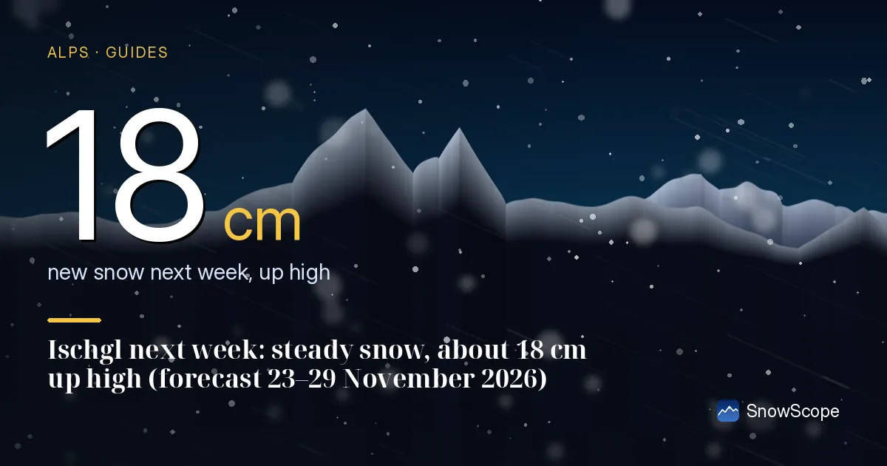

Ischgl next week: steady snow, about 18 cm up high (forecast 23–29 November 2026)
Next week from 23 to 29 November, Ischgl's upper slopes will gather about 18 cm of snow across the forecast range of 3 to 34 cm. Thursday 26 November is the snowiest day, when the top receives around 5 cm in the middle estimate, possibly up to 10 cm.
See the live snow forecast for Ischgl in the SnowScope appSnow depth, powder alerts and the 3D map, free.

When the snow arrives
The week breaks into two clusters. Monday 23 November brings 3 cm to the upper mountain, with Wednesday 25 adding a similar amount. Then Thursday 26 delivers the heaviest single day of about 5 cm, followed by another decent fall on Sunday 29 also around 5 cm. The days between are quieter.
This layered pattern—fresh snow on fresh snow—helps bind the snowpack as November turns to December. Each band adds to what came before, building coverage steadily rather than relying on one large event.
Height makes the difference at Ischgl
Up high near 2700 m, the week totals 18 cm (3–34 cm range). Step down to mid-mountain around 2100 m and the amount barely changes: 17 cm (2–31 cm). At the base near 1500 m, expect 14 cm (2–26 cm). The snow line stays high enough that precipitation falls as snow almost everywhere on the mountain.
This consistency down the slope is a sign the air mass will be cold. The high bowls towards Samnaun—Idalp plateau, Greitspitz and Palinkopf—are the natural snow holders, but the whole mountain should benefit.
How this week and next week connect
The forecast shows two instalments back-to-back. This week from 17 to 20 November already delivered 16 cm up high and 10 cm lower down. Next week's 18 cm at the top stacks on top of that foundation, adding roughly 34 cm total at the peak by month's end.
Early November starts were sparse, but by the time November closes, Ischgl will have accumulated decent early-season coverage. The question is not whether snow is coming, but how much the storm track shifts the totals.
Local terrain and cold-air pockets
Ischgl's skiing terrain sits well above the village in the Paznaun valley. The runs accessed from the Idalp operate in a colder microclimate than the valley floor, which helps snow retention even during November's occasional warm spells. The high bowls catch wind-blown cover from each snowfall.
The village itself is lower and warmer; that is reflected in the base forecast of 14 cm. If you plan lower runs, go early in the day before sun exposure softens the surface.
Ischgl versus nearby peaks
For next week alone, Ischgl's 18 cm at the top is solid but not exceptional in the region. St. Anton 19 km west receives 25 cm, and Lech-Zürs 29 km north-east picks up 30 cm. Davos 40 km east manages only 16 cm. Lech-Zürs emerges as the region's heavy hitter next week if you have a choice.
Ischgl still offers reliable terrain and cold slopes. The comparison simply shows that the Arlberg ridge to the north-west catches more of these particular storms.
What the forecast range tells you
The spread from 3 cm (low case) to 34 cm (high case) is wide. That spread reflects genuine uncertainty in storm placement and intensity midway through November—the forecast track firms up only a few days before. By the end of this week, the picture should narrow.
If you are planning a trip, watch the update on 19 or 20 November to see which end of the range is shaping up. That timing coincides with the official avalanche bulletin check before any off-piste travel.
Tips for skiers
- Thursday 26 November is your best day for fresh snow next week; plan your timing around it if possible.
- The upper plateau and high bowls—Idalp, Greitspitz, Palinkopf towards Samnaun—will hold the best and coldest snow through the week.
- Check the official avalanche bulletin of the province before leaving the pistes in Ischgl, especially if exploring off-piste terrain after new snow.
- Watch for the forecast update midweek (19–20 November); the range of 3–34 cm should narrow once the storm track becomes clearer.
- Lower-base runs (around 1500 m) will carry decent snow cover but warm faster; ski them early in the day to find the best surface.
About these numbers
Resort snow depths are the deepest snow on the resort's upper slopes on the date shown; they are estimates for an area, not a measurement at one point. Forecasts can change. Always read the official avalanche bulletin before going off-piste.
Cite this report
For research, teaching or the press: the numbers and charts are free to reuse under CC BY 4.0 with this citation.
SnowScope (2026), Ischgl next week: steady snow, about 18 cm up high (forecast 23–29 November 2026), https://snowscope.app/blog/en/2026/11/ischgl-snow-forecast-next-week-23-29-november-2026.html, accessed 2026-11-16
SnowScope (Atlas Labs). (2026, November 16). Ischgl next week: steady snow, about 18 cm up high (forecast 23–29 November 2026). SnowScope snow reports. https://snowscope.app/blog/en/2026/11/ischgl-snow-forecast-next-week-23-29-november-2026.html
BibTeX
@misc{snowscope2026ischglsnowforecastnextwe,
author = {{SnowScope (Atlas Labs)}},
title = {Ischgl next week: steady snow, about 18 cm up high (forecast 23–29 November 2026)},
year = {2026},
month = nov,
howpublished = {\url{https://snowscope.app/blog/en/2026/11/ischgl-snow-forecast-next-week-23-29-november-2026.html}},
note = {Published 2026-11-16 11:39 UTC; accessed 2026-11-16}
}· CC BY 4.0 · Methods, data and tools →
Ischgl: snow and temperature by height, this winter vs last (tools) →
Follow Ischgl
Free: a message when fresh snow is coming, and the forecast every morning.
More snow reports

Ski the 131 km of runs in the Forêt Blanche this December with a six-day pass for 298 EUR.

Valloire-Valmeinier offers 131 km of runs and a 98 % chance of 30 cm of snow at mid-mountain by mid-December.

Turracher Höhe has 23 cm at mid-mountain on a typical 15 December, but only 39% of winters reach 30 cm there in mid-December. Data from 13 November 2026.